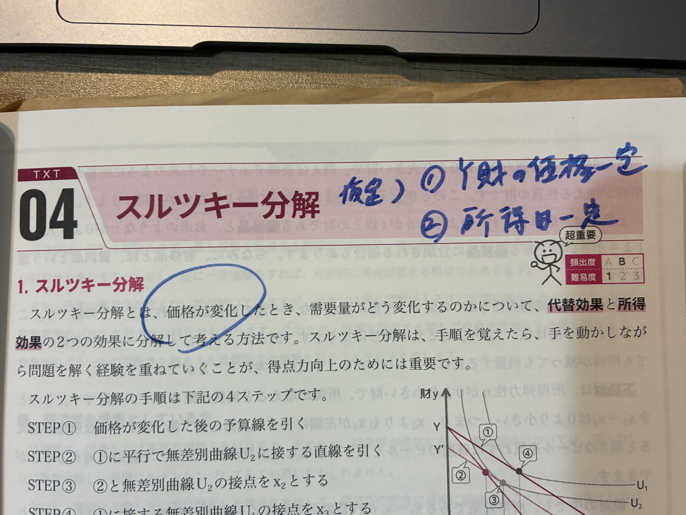
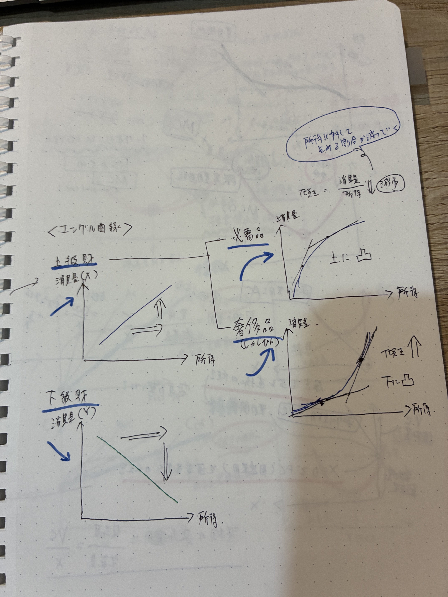
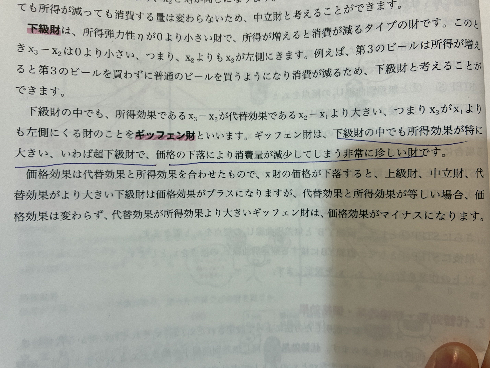

🐣 「価格が変わると消費はどう変わる？」
🧒
学習者
X財の値段が下がったら、必ず買う量は増える？🧑🏫
先生
普通は増える。でも ギッフェン財 という珍しい財だと、値段が下がっても消費量が減ることがある。価格の変化を 2つの効果 に分けて考えるのがスルツキー分解。🐣 つかみ
- 所得が増える → 買える量が増える（所得効果）
- 価格が下がる → 安くなった方を多く買う（代替効果）
- 価格効果＝代替効果＋所得効果
YouTube解説：スルツキー分解とギッフェン財
代替効果・所得効果の図解と例外財をわかりやすく解説
📊 価格↓のとき X財の消費量がどう動くか（矢印で見る）

📷 対応する手書きノート/教科書ページ：IMG_2411
📖 矢印の見方
- 紫の矢印（代替効果）＝必ず右向き（X財が安くなれば必ず増える）
- 橙の矢印（所得効果＋）＝右向き（実質所得増で消費も増・上級財）
- 赤の矢印（所得効果−）＝左向き（実質所得増で消費が減・下級財）
- 青の太矢印（価格効果）＝代替＋所得 の 合計（向きと長さで結論が決まる）
🌱 財の3分類（所得弾力性で）
| 分類 | 所得弾力性 η | 所得が増えたとき | 例 |
|---|---|---|---|
| 上級財（普通財） | η > 0 | 消費量が 増える | バター、ブランド品 |
| 中立財 | η = 0 | 消費量は 変わらない | トイレットペーパー、塩 |
| 下級財（劣等財） | η < 0 | 消費量が 減る | マーガリン、第3のビール |
所得弾力性 η = (ΔX/X) / (ΔM/M)。「所得が1%増えたとき消費量が何%増えるか」。
YouTube解説：スルツキー分解とギッフェン財
代替効果・所得効果の図解と例外財をわかりやすく解説
📊 エンゲル曲線：所得Mが増えたとき消費量Xはどう動く？

📷 対応する手書きノート/教科書ページ：IMG_2395
📖 「上に凸」「下に凸」の意味
- 上に凸（必需品）：所得を倍にしても消費は1.2倍くらい。所得の増加に対して消費の伸びが鈍る形（だから曲線が上向きに膨らむ）
- 下に凸（奢侈品）：所得を倍にすると消費は3倍に。所得が増えるほど消費が加速する形（だから曲線が下向きに膨らむ）
- 右下がり（下級財）：所得が増える → マーガリンをやめてバターに切り替え → マーガリンの消費は減る
📘 価格効果＝代替効果＋所得効果
X財の価格 Px が下落したとき
- 代替効果：相対的に安くなったX財をY財から乗り換えて多く消費する効果（必ずプラス＝Xが増える）
- 所得効果：実質所得が増えた分による消費の変化（上級財ならプラス、下級財ならマイナス）
📘 スルツキー分解の手順
- STEP① 価格が変化した後の予算線を引く
- STEP② ①に平行で、元の無差別曲線 U₁ に接する直線を引く（仮想予算線）
- STEP③ ②と U₁ の接点を x' とする（代替効果による消費点）
- STEP④ ①と新無差別曲線 U₂ の接点を x₂ とする（最終消費点）
代替効果＝x' − x₁、所得効果＝x₂ − x'、価格効果＝x₂ − x₁
📊 スルツキー分解（価格効果＝代替効果＋所得効果）
📷 対応する手書きノート/教科書ページ：IMG_2411
📖 グラフの読み方（4つのSTEP）
- STEP① 元の最適点 x₁＝元の予算線と U₁ の接点
- STEP② 価格変化後、新予算線（緑）を引く
- STEP③ 新予算線と平行で U₁ に接する仮想予算線（灰破線）を引く → 接点 x'
- STEP④ 新予算線と U₂ の接点 x₂（最終消費点）
- 分解結果：x₁→x' が 代替効果、x'→x₂ が 所得効果、合計が 価格効果
📌 スルツキー分解の前提（超重要）
- ① X財の価格が一定（変化しない）※他の財Yの価格は固定
- ② 名目所得が一定
この2前提のもとで、価格変化による消費量の変化のみを分解する。
YouTube解説：スルツキー分解とギッフェン財
代替効果・所得効果の図解と例外財をわかりやすく解説
🔍 ギッフェン財（特殊な下級財）
ギッフェン財の定義
下級財の中で、所得効果（マイナス）が代替効果（プラス）を上回る ほど大きい財。
結果として、価格が下がっているのに消費量が減る 異例の財。
|所得効果| > |代替効果|
需要法則の例外
ギッフェン財は 下級財の中でも超下級財。代替効果は必ずプラスだが、所得効果が極端に大きいため打ち消されてマイナスになる。
YouTube解説：スルツキー分解とギッフェン財
代替効果・所得効果の図解と例外財をわかりやすく解説
📊 通常財 vs ギッフェン財：需要曲線の違い

📷 対応する手書きノート/教科書ページ：IMG_2412
📌 ギッフェン財は需要曲線が 右上がりになる稀少な財（19世紀アイルランドのジャガイモが有名な例）
🔍 エンゲル曲線
所得Mと消費量Xの関係
- 上に凸：所得が増えても消費量の増加は鈍る → 必需品的な上級財
- 下に凸：所得が増えるほど加速度的に消費量が増える → 奢侈品（ぜいたく品）
- 右下がり：所得増 → 消費減 → 下級財
✍️ ノートの青文字・手書きメモ
IMG_2394：所得効果と財の分類

ノート：上級財（マーガリン→バター）／中立財（トイレットペーパー）／下級財
- 所得増 → 上級財 「マーガリン → バター」（質を上げる）
- 所得増 → 下級財 → 消費減
- 中立財：トイレットペーパー（X₁=X₂）
- 「下級財」「上級財」（青枠で分類）
IMG_2395：エンゲル曲線と所得弾力性
ノート：所得弾力性 = (ΔX/X)/(ΔM/M) ／ エンゲル曲線の上に凸・下に凸
- 青で囲み：所得弾力性＝消費の変化率／所得の変化率＝(ΔX/X)/(ΔM/M)
- 具体例として「2倍/3倍」など分数で計算
- 上に凸 / 下に凸 でエンゲル曲線の形状を分類
- 「上級財↑」「下級財↓」（青矢印）
IMG_2411：スルツキー分解の前提【超重要】
教科書：スルツキー分解の手順 ／ 青書込「(仮定)①X財の価格一定 ②所得=一定」
- 青で大書「(仮定) ①X財の価格一定」
- 青で大書「②所得 = 一定」
- 「超重要」マーク付き
- 「価格が変化したとき」を青で囲み（分解の対象明示）
IMG_2412：ギッフェン財の青下線
教科書：「ギッフェン財」青下線で強調 ／ 下級財の中でも所得効果が特に大きい超下級財
- ギッフェン財（青下線で強調）
- 「下級財の中でも所得効果が特に大きい、いわば超下級財」
- 「価格の下落により消費量が減少してしまう非常に珍しい財」
🔑 これだけは押さえる
- 財の3分類：上級財（η>0）／中立財（η=0）／下級財（η<0）
- 価格効果＝代替効果＋所得効果
- 代替効果は 常にプラス（安くなった方が増える）、所得効果は財の性質次第
- ギッフェン財：所得効果が代替効果を上回る下級財（需要法則の例外）
- スルツキー分解の前提：X財の価格一定 ＆ 所得一定
✏️ 穴埋め演習
基礎
① 所得が増えると消費量が増える財を 上級財 という。
② 所得弾力性 η < 0 の財を 下級財（劣等財） という。
③ 価格効果＝代替効果＋ 所得効果
④ 下級財のうち所得効果が代替効果を上回る財を ギッフェン財 という。
⑤ スルツキー分解の前提：①X財の価格一定 ② 所得一定
❓ ミニクイズ
Q1
ギッフェン財に関する記述として正しいのはどれか。
代替効果は常に正。ギッフェン財は所得効果（負）が代替効果（正）を上回り、結果として価格効果が負になる下級財の特殊例。
Q2
所得が10%増加し、X財の消費量が5%増加した。Xの所得弾力性は？
η=(5%)/(10%)=0.5。0<η<1 は必需品的な上級財。